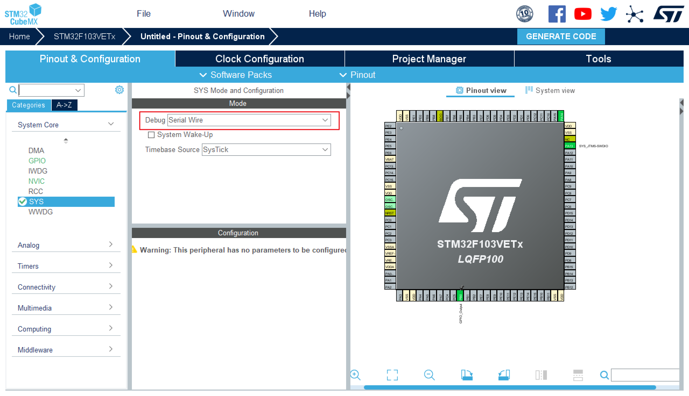
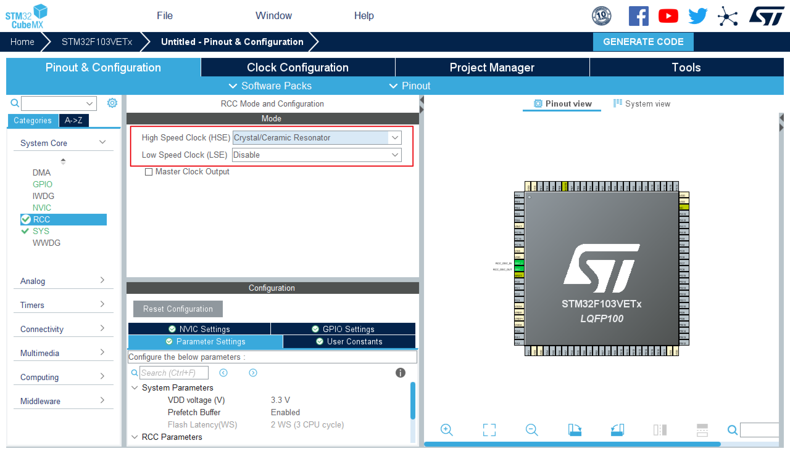
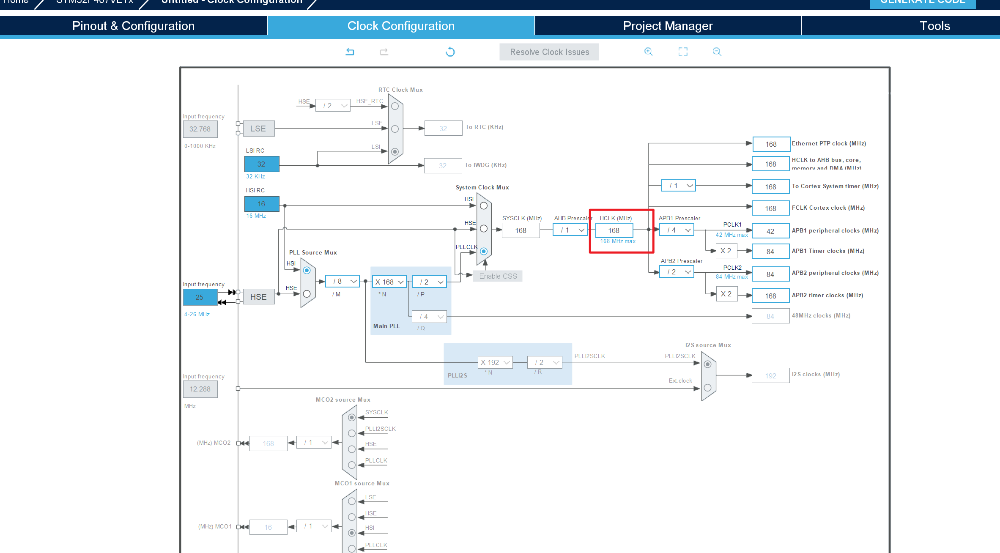
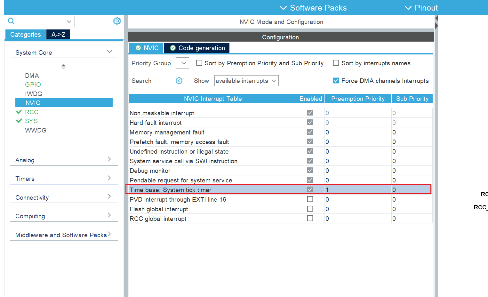
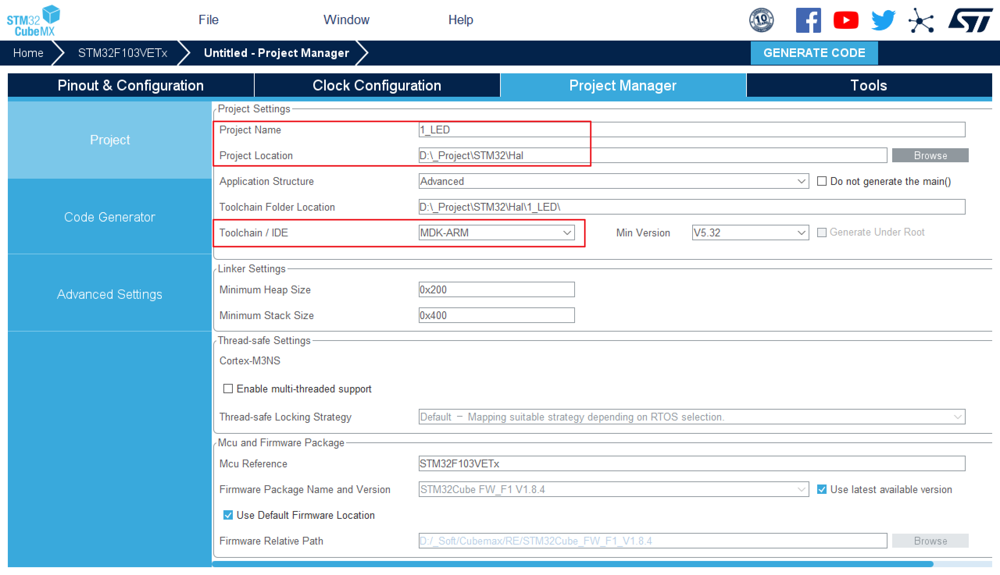
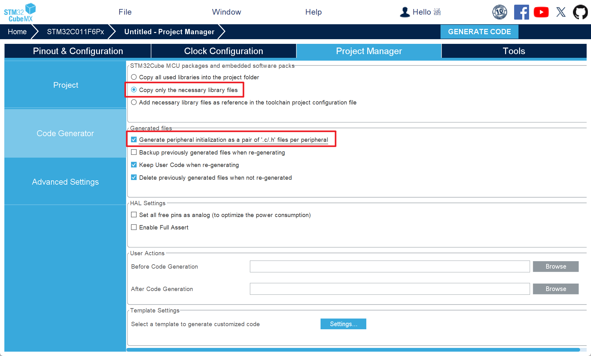
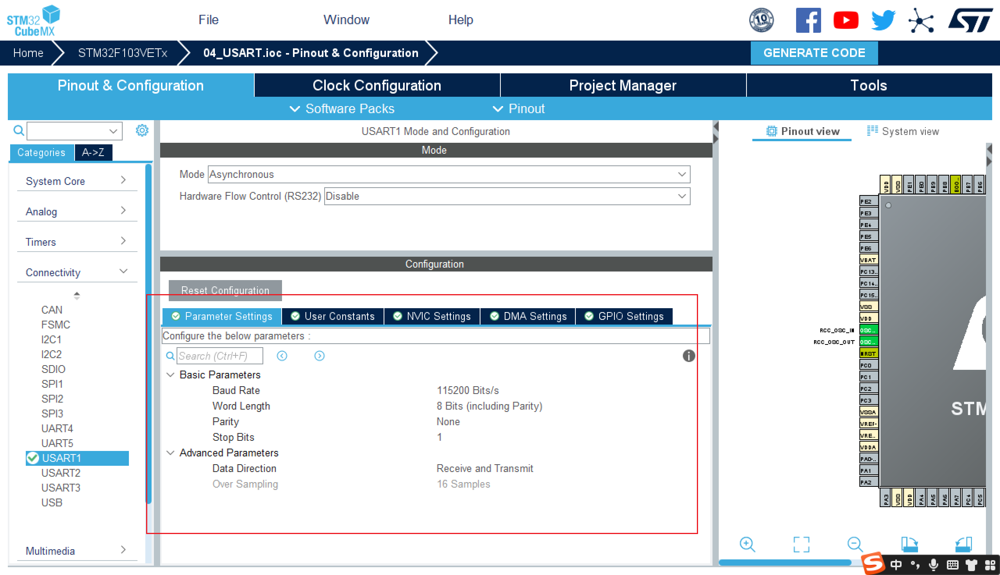

HAL库 串口printf配置
1 基本配置
烧录选择串行：

选择时钟

设置时钟频率

重设系统滴答定时器中断优先级

设置文件名和选择 IDE

设置只拷贝需要的库和创建独立. c 和. h 文件

建立工程并打开后在 Debug >> Settings 中勾选 Reset and Run
2 串口 printf 配置
- 选择要用于 printf 的串口，选择异步通信模式

- 在下方选项卡中可以配置串口参数

- 创建工程后重定向 printf

- 重定向函数的模板：
1 | /** |
或者
1 | int fputc(int ch, FILE *file) |
- 包含
文件 - 勾选使用微库

本博客所有文章除特别声明外，均采用 CC BY-NC-SA 4.0 许可协议。转载请注明来源 XHan！